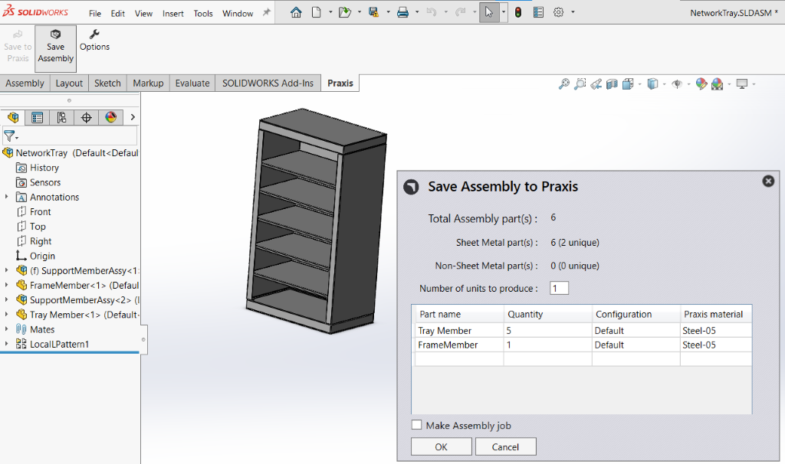
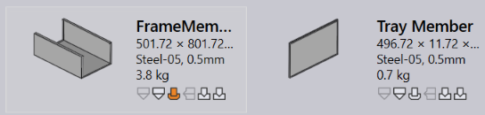

Open an assembly and use the Save Assembly toolbar command to save the assembly parts to the part library. The assembly save dialog displays the assembly BOM with part instance counts along with the identified raw-material. Press OK to save the parts to Praxis.

